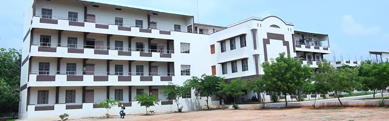

Erode Sengunthar Engineering College is a well -developed institution offering a variety of programs in UG and PG degree courses. Erode Sengunthar Educational Trust started the College in the year 1996 with a vision to provide world class technical education for the upliftment of urban and rural youth. The Management of Erode Sengunthar Educational Trust has been associated with various Educational Institutions like Matric & Higher Secondary Schools, etc. The Engineering College has been functioning at Thudupathi, Erode Dt. All these “Temples of learning” owe their existence to our founder Udyog Rattan Theiva Thiru. J.Sudhanandhen, Thiru. A.Munusamy, Founder President, Thiru G. Kamalamurugan, President & Correspondent, Thiru. P.S Natarajan, Honorary President, Thiru A.P.V. Saminathan, Thiru A. Mohanasundaram, Vice – Presidents, Thiru. S.N. Thangaraju, B.E., M.B.A., Secretary, Thiru. S. Senthilkumar., Treasurer, Thiru V. Dharmalingam & Dr. S. Poorani, M.E. Ph.D., Joint Secretaries and other esteemed members of the Erode Sengunthar Educational Trust.
Erode Sengunthar Engineering College is accredited by National Board of Accreditation (NBA), ISO 9001:2008 Certified, approved by AICTE and Permanently affiliated to Anna University. It imparts technical education of high calibre to meet the growing needs of Engineers and Entrepreneurs. The College offers courses of study that are on the frontiers of knowledge and it connects the spiritual and practical dimensions of intellectual life, in a stimulating environment that fosters rigorous scholarship and supportive community. The college has completed 18 years of dedicated service to the people of India and abroad in the field of Technical Education. The Institution has an area of 55.54 acres of land richly endowed with eco – friendly and beautiful greenland. The college with its state – of – the – art infrastructural facilities and excellent academic records has earned recognition as one of the reputed educational institutions in India. Erode Sengunthar Educational Trust has taken the college to greater heights since its inception in 1996, establishing the college as a forum for imparting value – based technical education. The members of the Erode Sengunthar Educational Trust have created endowments to award prizes to the students for their outstanding performance in the University Examinations. Gold medals and Cash prizes are awarded to University Rank Holders and College Toppers year after year.